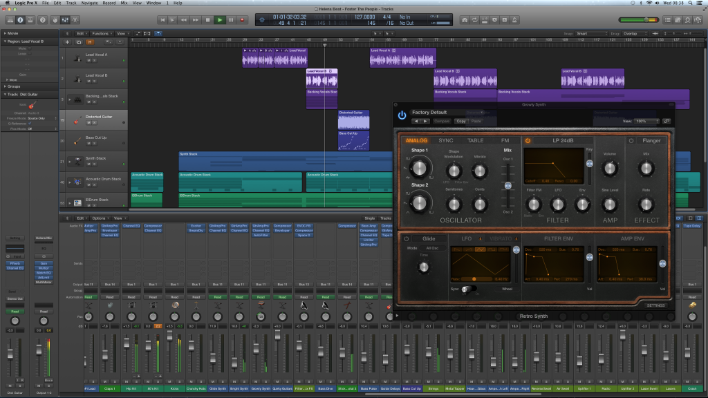

Logic
로직 프로(영어: Logic Pro)는 애플에서 인수&합병하여 배포한 음향 전문 소프트웨어 제품이다. 현재 한국뿐만 아니라, 전 세계적으로 많은 프로듀서들이 로직 프로를 선택하여 작곡하고 있다. Logic Pro는 음악을 만들기 위한 많은 기능을 제공하여 한국 안팎의 많은 가수, 프로듀서들에게 많이 활용되고 있다. Lily Allen의 프로듀서인 Greg Kurstin, Sprung의 프로듀서인 T-Pain, 슬럼독 밀리어네어 영화에 사용된 음악을 작곡하였던 A.R. Rahman 등이 있으며, The Killers 가수 그룹은 'Day & Age'를 스튜디오에서의 녹음이 아닌, Logic Pro에서 작곡을 하였다. 한국에도 많은 가수들과 프로듀서들이 Logic Pro를 이용하여 작곡하며, 실제 방송에서 Logic Pro와 Main Stage를 함께 이용하여 공연을 하였다. 원래 로직 프로는 일부 가수나 프로듀서들에게만 알려졌던, 타 음향 전문 소프트웨어보다 시장이 활성화되지 않았었다. 하지만 슬럼독 밀리어네어가 음악상을 받게 되면서부터 유명 프로듀서들 사이에서 Logic Pro가 큰 인기를 얻게 되었다. 추후 애플이 로직 프로를 9.0 버전으로 판올림을 하였는데, 더욱 많아진 플러그인과 이펙트, 루프들이 포함하게 되면서 음향 전문 소프트웨어 시장에서 빠르게 활성화가 될 수 있는 계기가 되었고, 이렇게 되면서 대한민국에도 Logic Pro가 사용되게 되었다.